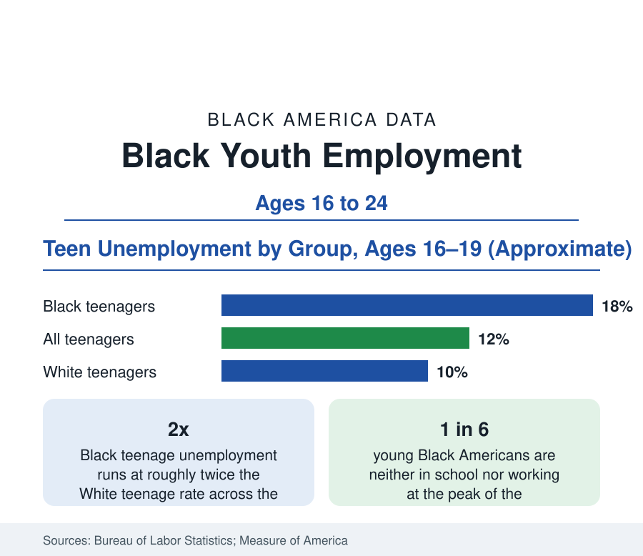

Black Employment
Black Youth Employment: The First Rung of the Ladder
Black teenagers and young adults face unemployment rates roughly double the national youth figures — and the research shows the first job shapes the next decade. The BLS data.

The two-to-one pattern of Black unemployment begins at the first rung. Black teenagers aged 16 to 19 record unemployment rates in the high teens — roughly double the White teenage rate — in the Bureau of Labor Statistics' monthly data, and Black young adults aged 20 to 24 run several points above their peers as well. The youth labor market is where the employment data's adult patterns are rehearsed: the same ratio, the same cyclic sensitivity, compounded by the research finding that early work experience — or its absence — echoes through earnings for a decade. This article reports the youth data.
Participation: Fewer Black Teens in the Market at All
Unemployment understates the youth gap because it counts only those looking. Labor force participation among Black teenagers runs below White teenage participation — more Black teens are neither working nor seeking, a difference the research links to the local availability of the retail and food-service jobs that employ teenagers, to transportation, and to network effects: teenagers find jobs overwhelmingly through employed family and neighbors, so adult joblessness in a neighborhood transmits directly to its teenagers. School enrollment complicates the comparison in a healthy direction — Black teens' school enrollment rates are high and rising in the education data — but the enrollment-adjusted comparisons in the literature preserve the employment gap among those in school as well.
Disconnection: The NEET Measure
The starkest youth series is disconnection — the share of 16-to-24-year-olds neither enrolled in school nor employed, tracked by Measure of America from the Census Bureau's surveys. Black youth disconnection has run in the range of one in six to one in five across the past decade's readings, roughly double the rate for Asian youth and well above the White figure, with young Black men at the highest rates and the geography concentrated in the disinvested districts of the city profiles. Disconnection is the youth statistic with the longest shadow in the longitudinal research: each year disconnected in this window predicts lower employment and earnings a decade later, net of education, which is why it — rather than the monthly teen unemployment rate — is the figure policy in this area is organized around.
What Works in the Data: Summer and Subsidized Jobs
The youth employment intervention with the strongest experimental evidence is the summer jobs program. Randomized evaluations of large city programs — New York, Chicago, Boston — find that a subsidized summer job produces modest direct earnings effects but large secondary ones: improved school attendance and progression in the following year, and in the Chicago study, a reduction of roughly two-fifths in violent-offense court involvement over the following sixteen months. Year-round subsidized employment and career-academy models show employment gains in their evaluations as well. The programs operate at a scale far below the disconnected population — the major cities' summer programs serve tens of thousands against a national disconnected Black youth population in the hundreds of thousands — which the policy literature frames as the central fact: the intervention with evidence is rationed.
The School-to-Work Pipeline
Beyond programs, the structural pipeline data include career and technical education — where Black students' participation in high-wage-pathway programs (health sciences, information technology, advanced manufacturing) trails their enrollment share in the federal CTE data — apprenticeships, where Black participation in registered programs runs at roughly half the Black share of the youth population, and the community college workforce programs of the education section. The employer side completes the picture: the audit-study literature on entry-level hiring finds callback gaps for young Black applicants comparable to those for adults, the finding that converts the youth unemployment ratio from a supply story into a demand one as well.
Reading the Youth Data
Youth employment is the employment section's leading indicator: the teen ratio forecasts the adult one, disconnection forecasts the decade, and the summer-jobs evidence shows the earliest point at which intervention measurably bends the curve. The figures here — double unemployment, lower participation, one in six disconnected — describe the labor market's front door, and who finds it open.
The monthly youth series from the Bureau of Labor Statistics is the update source for every figure in this profile.
More in Black Employment
The Black Unemployment Rate: The Two-to-One Pattern
Black unemployment runs at roughly twice the White rate — 5.5 percent against 3.3 percent in annual averages — a ratio stable across five decades of federal data. How it is measured and why it persists.
Black Median Weekly Earnings: The 80-Cent Ratio
Black full-time workers earn a median of about $900 a week — roughly 80 cents for every dollar White workers earn. The BLS earnings data by group, gender, and occupation.
Black Labor Force Participation: Working at National Rates
Black labor force participation runs at roughly the national rate — and Black women participate at higher rates than White women. The BLS participation data.
Source: U.S. Bureau of Labor Statistics, Current Population Survey; Measure of America youth disconnection data; summer youth employment program evaluations.